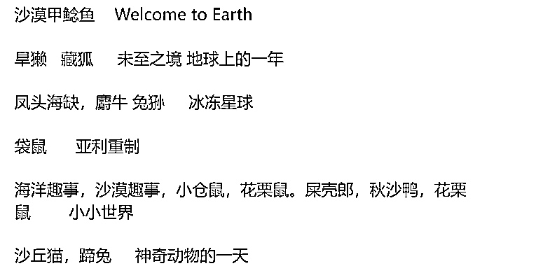
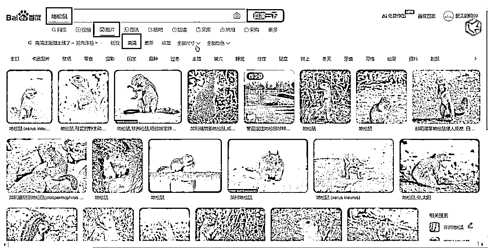

来源：https://o0yvn3o31a.feishu.cn/docx/LraedDSHOoCBQGxdjjIcNH5PnQc
大家好，我是黄岛主！
今天给大家拆解的短视频副业项目，是有关于动物类二创搞笑短视频赛道的玩法，这类赛道经过我们的分析后发现它在抖音上面还是比较热门且流量很可观。重点是用户看完一个视频后还想继续看下一个视频，因为视频实在太搞笑了。所以，我觉得还不错就拆解给大家学习下，如果有感兴趣的话也可以操作看看的。
那么这个动物类的短视频，我们称它为“搞笑动物小世界”，主要就是通过二创的方式对视频剪辑、配音等处理，整体不是太难，基本小白看完就可以学会，而且我这次拆解的都是完整的步骤，我都怕被抖音的博主看到会来喷我，当然这是开个玩笑，如果副业项目确实不错，我们也会毫无保留的去保姆式拆解分享给大家！
来，我们简单看下视频案例：
好了，说个关键性问题也是大家最在意的变现问题，那么通过我们的发现，这类赛道的短视频可以通过播放量来变现，抖音上的主要变现途径就是中视频、星图。单看中视频收益吧，这个数据绝对拉爆大家的小眼睛哈，看完你肯定想去搞一搞了，包括我们也是！
中视频变现的数据图，如图看下：
当然，我们还可以做分发，可以去视频号，西瓜视频，抖音，快手等同步去发，因为现在这些平台都是有播放量收益的，比如视频号有创作者计划、快手有光合计划，抖音有中视频计划等，这类视频只要有播放量就会有收益。

如果单看抖音这个平台的话，达到一定条件之后，不光可以开通创作者分成计划还有伙伴计划，同时可以接星图商单，接广告，视频小黄车带货等等变现都可以。这个如果你们感兴趣的话，可以跟拆解完的多研究下！
那么，具体账号的案例图我们来看下：其实你可以看到这些抖音账号，点赞、评论、粉丝数据都很高，再加上上面的中视频变现数据很不错。所以，我觉得完全可以搞起来这个。
好了，以上是这个项目的大概介绍，下面我们就详细的说下拆解的内容！
关于账号注册我就不多说了，这个基本上大家都会。除了一些小细节要注意，就是一机一卡一号去注册就行了，其他也没啥，这个就不多说了！
另外账号这块的细节说下：是关于账号扣分的情况，也就是账号封禁扣100分，扣20分。这个可能是因为画风不良，比如放了色情，血腥，演员不适，可能会被扣分，原创度过低，或者跟别人大差不差，非常相似，就会出现伪原创，会扣你20分，所以前期临摹别人的，或者说写别人稿的时候呢，原创度不够的时候，一定不要参加中视频，原创度过了再参加中视频。
而且，账号信用分大于等于60分可以正常使用，低于60分所有权益被封禁，西瓜号就废了，只有重新申请西瓜视频，一定要保证原创作品，不要擦边。所以这些细节一定要注意了哈！
那么账号注册完之后，我们需要刷刷视频养下活跃度，基本上3-7天的操作时间，主要是每天抽出一小时去刷同类型的视频，可以点赞也可以关注，然后登你这个号推荐也基本都是这种动物结束类型的，就算完成养号！这个其他也没啥，也不多说了哈！
关于过中视频计划的操作，这个都很简单，我们只需要去抖音发三条原创的横屏视频，只要总播放量达到1.7万即可申请，然后申请的中视频一定要从手机发，可以自动审核，审核在5天左右，不过的话30天之内不能再申请中视频，只能再换西瓜号重新申请，抖音号不用换，换个西瓜重新换绑一下。
不过的话，可能包括视频质量太差，原创度不够，内容低俗，是决定过不过的关键因素，视频质量太差是加工太少，细节处理不到位，会影响审核失败，不给参加中视频。
还有个细节看下：如果原创度太低，文案跟别人非常相似也不能过，因为前三条要求会比较高一点，等过完中视频再发视频，要求会降低，3条申请中视频的一定要做好，不想太浪费时间、精力去过中视频，可以去某宝上买西瓜成品号，直接绑定在抖音就可以了，但是还是建议大家通过自己剪辑视频过中视频。
那么这里普及下：中视频就是抖音、西瓜视频的变现模式，这个是不需要粉丝数量要求。中视频计划允许0粉丝开始，主要关注的是视频的质量和播放量。具体来说，参与中视频伙伴计划的条件包括发布三个一分钟以上的横屏原创视频（比例为16:9），并且这些视频的累计播放量需要达到17000。满足这些条件后，创作者可以申请加入中视频伙伴计划，从而获得抖音、西瓜视频、今日头条三个平台的推送及播放收益
过计划，我们也可以自己通过做应用题然后投豆荚的方式去过，可以看上次写的飞书有：
来，我们直接看下具体的操作流程：
素材很好下载，我们通过分析后，给出了一些不错的国外的纪录片素材，下面图可以看到哈，注意图片上的每一行的最后的就是纪录片的名字，前面是动物名字！

那么这里给大家准备了一些网站和资源，适合新手的免费网站https://www.btnull.org (片库网 免费的，但资源有限，也有好片子) ，直接搜索小小世界，里面有第一季和第二季，适合拿来练手，需要用到迅雷下载，选择1080p即可，适合所有人去用的网站，第三页和第五页。
点开之后下载，有网盘的就点网盘下载，没有的就点磁力资源，用迅雷下载，可以下载中文字幕的，1080P的就可以了。
下面这几个网站需要付费，大家酌情根据自己的情况去操作，需要注册账号，充值会员就可以下载：
http://www.135world.com (135 纪录片 最常用 资源全更新快 需要开会员)
https://www.onehourlife.com/ (每天一小时纪录片)
https://www.bilibili.com/ (B 站)
http://www.docuchina.cn/ (中国纪录片网)
https://www.05jl.com/ (纪录片之家)
http://xz.tqiantu.com/jilupian/ (行者物语)
http://jishi.cctv.com/ (央视网纪实)
https://www.xitongle.com/ (纪录片部落)
素材的操作方法大概是这些，反正很简单，这个一看就会哈！
根据我们的拆解后发现，其实做动物搞笑视频赛道，最苦恼的就是文案，很多人不知道如何去下手。那么我们建议可以先把素材放到剪映里，如果下载的素材有中文字幕就直接看，如果没有就要把中文字幕加上去，不然听不懂在讲什么。所以我们可以点文字，找到智能识别字幕，点击中文就可以看到字幕。
那么识别完之后把视频整体加速浏览看一下，在看的过程中去理解，有助于后期写文案，但不是每个纪录片都必须从头到尾看完，有的纪录片平平无奇，没有意思，没有什么好看的点，先大概看一下，觉得视频比较好玩，有意思再继续去看，不好玩的就不剪辑，一定要边看边思考，哪里有比较搞笑的反转，一定要制造画面的反差感。
比如写正在长大，或者如何可爱，或者是突然一下死掉了，或者被别人吃掉了，或者是成了别人的盘中餐，加上搞笑的音频、音效，刚开始操作的时候没有头绪的话，可以多看一下同行的热门文案，抖音里面有很多，可以去借鉴一下，我也给大家找了几个同行，大家可以去看一下，平时多刷一刷，找到别人用过的，好的句子再去修改一下，加入自己的一些想法进去都可以。
模仿的时候一定要把动物的名字改掉，或者也可以写长得挺难看、挺有意思、挺像马特、挺文艺，毛茸茸，都可以写，根据动物习性写，找网上比较热门的同行案例去参考。
比如开头的反转，本期的主角，是一只异常凶猛的，地松鼠，就写地松鼠异常凶猛，然后逗号地松鼠，后边来反转，地松鼠是萌的，前面是异常凶猛，前后写出反转，适当的去加一点音效，增加视频的搞笑程度，吸引用户关注停留，根据视频内容去写，字数大概在500字左右，文案就差不多了。
文案配音这个很简单，我们打开微信搜一搜，搜索南瓜配音，用麦克阿瑟配音即可，然后找到把文案粘贴进去，每句话说完给它添加上一个停顿0.5秒就可以，语速10就可以，语调自己去调，改成叙事，保存作品，导出MP4格式到相册。
剪辑视频的时候，我们需要根据配音去剪视频，操作很简单：先配音拉到剪映里面，根据配音去剪，一边剪，一边插上好听的音效。关于音效、背景音乐我给大家推荐一些，可以去收藏一下哈！
那么视频裁剪完，音效添加上，音效长的就把配音音频往后移一下，音效一定要和配音尽可能匹配，全部都做好之后，选中视频，鼠标右键，新建复合片段。
把音量调到最低，视频尺寸裁剪一下，鼠标右键。小姐。然后。16:9。把下面这个文字给它挡上。本期的主角是一只异常勇猛的比松鼠啊，然后再给它添加一个背景音乐进去。
再给视频添加背景音乐进去，可以去找对标同行比较热门的音乐，把音量调低一些，配音的音量适当拉高，背景音乐参考下面我收藏的这些，音乐不够长可以复制粘贴一段出来，把多余的剪掉。


把画质调一下，如果有会员的话，直接点击智能调色就行，如果没有的话就把色相、饱和度、亮度稍微的拉一下，锐化、清晰度也调一下，颗粒可以不调，然后拉到和视频对齐。
接下来识别它的字幕，点击文字，开始识别，其实视频制作的关键还是在于剪辑视频啊，剪辑多了就有手感了，文案写的话可以去多参考同行写，这个没有什么技巧，熟能生巧吧，主要就是多添加一些反转进去。
生成好之后把字体改一下，系统推荐的其实就可以，不需要改花里胡哨的颜色，颜色稍微调一个就可以，把字幕整体看一下，有没有错别字，或者太长的分成两段，加上自己的账号水印，点击文字新建，比如黄岛主小世界。


添加账号水印放到右上角，然后拉到和视频对齐，不透明度可以稍微降低一下，带反转的句子一定要给它分成两段字幕，其他大概没有什么问题，点击视频，导出2K分辨率，帧率60。
可以去百度里面搜索动物的名称，地松鼠，点击图片，选择高清，找一个你觉得比较好看的，复制粘贴到桌面上去。

打开剪映，把图片拉进去，比例调成9:16，拉大，把图片的清晰度调一下，点击调节，亮度、清晰度、锐化、饱和度适当的调一些，暗角也稍微拉一点。
然后添加上文字地松鼠，把字体调一下，一般用到比较多的是追光体，调一下它的颜色，颜色一定要统一，不要今天用这个颜色，明天用那个颜色，统一用哪个颜色就行，不要天天换，这样你的封面就没办法统一。
比如用这个颜色，把描边打开，阴影适当的调一下，下面再添加一个，多去参考同行都是怎么做封面的，直接去模仿就行了。
比如科普，字体颜色调一个，描边打开，粗细调一下，阴影也调一下，图片就做好了。
做好之后直接截图保存就行了，或者可以点击直接设成封面，图片就设置成封面，后面做视频的时候就在这个上面去做就可以了。
视频制作好之后，就可以去发视频了，这个发布也很简单：
我们只需在抖音创作者服务中心，点击发布视频，然后写标题，写搞笑幽默的，这里可以多看看别人怎么写的，然后添加话题，比如动物解说、反转、搞笑，再加上动物名字。另外标题其实也不影响视频流量，写的好一点担任是锦上添花了，最后封面也上传一下，选择竖封面，就可以发布了。
然后西瓜和今日头条同步一定要点开，点击原创，只有点击原创才能参加中视频计划，播放量才会有收益，选择公开，可以立即发布，也可以定时发布，两个小时之内定时不了。
还有一点：发完视频之后发错了，或者有问题，不能删了重新再发，即使在审核的时候删掉重新发也没有流量，已经选了原创，只能发一次，中视频每个视频只能在一个账号发，不能重复，中视频有电脑的在创作者中心发，手机发的时候点击同步西瓜和今日头条，点击原创就行了！
这里我想说的是，虽然抖音中视频是比较老的项目了，但是现在老项目也非常吃香，而且这类赛道已经不是那么的卷了，只要你想发展中视频项目完全是可以满足于副业的。而且最近我也拆解了一些中视频项目，我觉得还是不错的。所以，我拆解完的，大家如果感兴趣，可以实操起来看看。然后有问题可以多跟我交流哈！